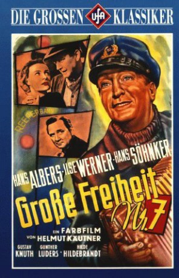

#1160 Große Freiheit Nr. 7 - La Paloma
Alternativ: Port of Freedom (Englischer Titel)
 
 IMDB-Wertung: 7.4 / 10
IMDB-Wertung: 7.4 / 10  Metascore: 0
Metascore: 0 
Jahr: 1944
Dauer: 111 Minuten
FSK: 6
Land: Deutschland Studio: DFVTonspuren:
Untertitel:
Auflösung: SD (924x720) Größe: 2570 MB
Genre: Drama, Musical, Liebe
Regisseur: Helmut Käutner
Drehbuch: Helmut Käutner, Richard Nicolas
Soundtrack: Werner Eisbrenner
Darsteller:
- Hans Albers als Hannes Kroeger
- Ilse Werner als Gisa Häuptlein
- Hans Söhnker als Willem
- Hilde Hildebrand als Anita
 Gustav Knuth als Fiete
Gustav Knuth als Fiete- Günther Lüders als Jens
- Ilse Fürstenberg als Gisa's mother
- Ethel Reschke als Margot
- Erna Sellmer als Frau Kaasbohm
- Kurt Wieschala als Jan
- Helmut Käutner als Karl
- Richard Nicolas als Admiral
- Maria Besendahl als Frau Boergel
- Justus Ott als Herr Wellenkamp
- Gottlieb Reeck als Herr Puhlmann
- Thea Thiele als Consul's wife
- Alfred Braun als Rundfunkreporter
- Rudolf Koch-Riehl als Master of ceremonies
- Karl-Heinz Peters als Postman
- Erwin Loraino als Sailor
- Kurt Felden als
- Eva Gotthardt als
- Hans Kornowicz als
- Alfred Maack als
- Friedrich Petermann als
- Aruth Wartan als
Datei: X:\1900-1949\Große Freiheit Nr. 7 - La Paloma (1944, FSK6, 924x720).mkv seit 29.05.2015
Festplatte: HD 1900-1970
 Es gibt insgesamt 80 Filme in der Gruppe '1900-1949'
Es gibt insgesamt 80 Filme in der Gruppe '1900-1949'